I’m Abygail Bulley, a digital designer with a lifelong love for art and visual storytelling. Raised in a military family, I’ve lived all over the country an experience that shaped my creativity and broadened my perspective. Currently im earning my AS in Digital Design at Seminole State College, where I’ve been building skills in design, illustration, and digital media. I’m passionate about creating meaningful, visually engaging work and excited to keep expanding my craft.